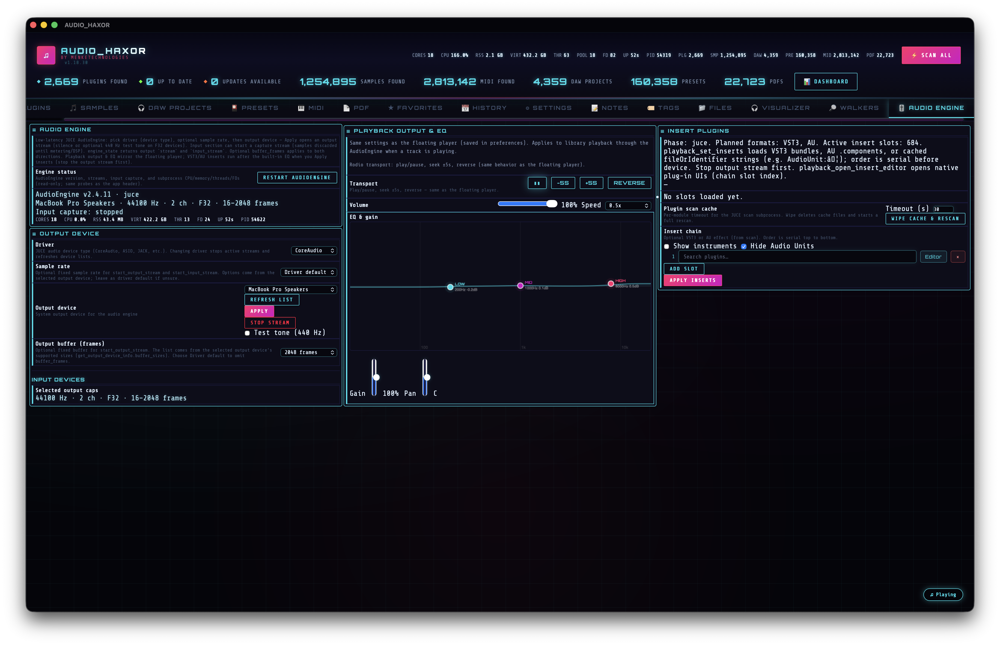

16.Audio Engine tab — F6
The developer surface for the JUCE-backed subprocess. Device & sample-rate selection, buffer frames, the VST3 / AU plugin insert chain with editor windows, input-monitor peak meters, subprocess stats, and a restart button.

What is the Audio Engine?
AUDIO_HAXOR spawns a separate child process — an audio helper built on top of JUCE — as its real-time playback backend. The main Rust process communicates with it over JSON lines on stdin/stdout via the audio_engine_invoke Tauri command. This keeps the WebView's Web Audio API as a preview fallback, while the real audio path (bit-perfect device selection, plugin hosting, low-latency buffers) lives in native code.
The Audio Engine tab is the configuration + diagnostics UI for that subprocess. It's developer-leaning — most end users will never need it — but it's the only place you configure a specific audio interface, dial in a buffer size, or host a VST3 / AU plugin chain on library playback.
Output device configuration
Populated by aePopulateAudioDeviceTypeSelect(), aePopulateSampleRateSelect(), and aePopulateBufferFramesSelect() in frontend/js/audio-engine.js.
- Device type — dropdown listing every JUCE driver family detected on the machine (Core Audio on macOS; WASAPI, DirectSound, ASIO on Windows; ALSA, JACK on Linux). Pref
audioEngineJuceDeviceType. Population IPC:list_audio_device_types. - Output device — dropdown of physical outputs for the selected type. Pref
audioEngineOutputDeviceId. Population IPC:get_output_device_info { type }. - Sample rate — populated from the device's supported list. Pref
audioEngineSampleRateHz. Leave empty for driver selected. - Buffer frames — output buffer size in frames, clamped to
AE_MAX_BUFFER_FRAMES = 8192. PrefaudioEngineBufferFramesOutput. Lower values → lower latency, higher CPU.
Input device configuration
Same pattern for the input stream:
- Device type (same dropdown as output).
- Input device — pref
audioEngineInputDeviceId. Population IPC:get_input_device_info { type }. - Input buffer frames — pref
audioEngineBufferFramesInput.
Once started, the input stream feeds a peak meter. tickAeInputPeakPoll() polls input_stream_status every 100 ms (AE_INPUT_PEAK_POLL_MS) and updates the level display. Polling pauses entirely when the tab is hidden or the app is in heavy-CPU idle mode, via bindAeInputPeakVisibilityOnce().
Plugin insert chain
The insert chain is a set of numbered slots (typically 1–8) where you can drop VST3 or AU plugins to process playback in real time. The chain works for any file loaded into the engine path (samples previewed with engine-mode playback, or files loaded directly in this tab).
Plugin discovery
The engine scans your system for plugins via the plugin_chain IPC command. Response fields:
ok— bool.scan_done,scan_total,scan_skipped— scan progress.scan_cache_loaded— whether a cached result was used.scan_current_format,scan_current_name— live progress (what's being validated right now).plugins— the list of successfully-discovered plugins with metadata.
While the scan runs, a single non-expiring toast updates in place (AE_PLUGIN_SCAN_PROGRESS_TOAST_ID), so you don't get drowned in toast spam. The full plugin catalog is cached on the JS side in aePluginCatalog and aeLastPluginChain (used for re-filtering when the "show instruments" toggle changes).
Inserting plugins
Each insert slot has its own dropdown picker tracked in aeInsertPickers. When you pick a plugin from the list, the frontend calls playback_set_inserts { paths: [...] } with the new chain and the engine loads the plugins in order.
Editor windows
On macOS and Windows, each inserted plugin exposes a native editor window. Launch it with playback_open_insert_editor { slot }, close it with playback_close_insert_editor { slot }. The window is a full native plugin UI — same as what you'd see in a DAW.
audiocomponentd refuses XPC view delivery to unsigned hosts. A Developer ID-signed build with the audio-plugin host entitlements resolves this.
Engine-side playback commands
Every command the engine accepts, in rough order of how you'd use them (all sent via audio_engine_invoke):
engine_state
start_output_stream { sample_rate_hz?, device_id, buffer_frames? }
start_playback
playback_load { path }
playback_pause
playback_seek { position_sec }
playback_set_dsp { ... } // gain, pan, EQ
playback_set_speed { speed } // 0.25-2.0
playback_set_reverse { enabled }
playback_set_loop { enabled }
playback_status // elapsed_sec, total_sec, playing,
// optional spectrum bins
playback_stop
playback_set_inserts { paths: [ ... ] } // VST3 / AU chain
playback_open_insert_editor { slot }
playback_close_insert_editor { slot }
stop_output_stream
start_input_stream { ... }
input_stream_status
stop_input_stream
set_output_tone { freq_hz?, gain? } // test signal generator
plugin_chain // scan + query current chain
list_audio_device_types
get_output_device_info { type }
get_input_device_info { type }
Process diagnostics
refreshAeProcessStats() (~line 102) fetches get_audio_engine_process_stats on a 3-second interval (only while the tab is active and the app isn't in heavy-CPU idle mode). Stats container #aeProcessStats populates:
aeStatCores— CPU cores.aeStatCpu— CPU usage.aeStatRss— resident memory.aeStatVirt— virtual memory.aeStatThr— thread count.aeStatFd— open file descriptors.aeStatUp— uptime (humanized).aeStatPid— subprocess PID.
When the engine isn't running, #aeProcessStatsInactive takes over with an explanatory message.
Restart & EOF watchdog
- Restart engine — dispatches
audio_engine_restart, which rebuilds the child process without touching the main window. Use this if the helper gets stuck or you've just changed a buffer-size setting. - EOF watchdog —
audio_engine_eof_watchdog_start/audio_engine_eof_watchdog_stop. A background thread polling playback status at 1 Hz (EOF_WATCHDOG_POLL_MS = 1000), emitting theaudio-engine-playback-eofevent on a rising-edge EOF transition. This is what keeps autoplay advancing when the WebView's timers are throttled by the OS.